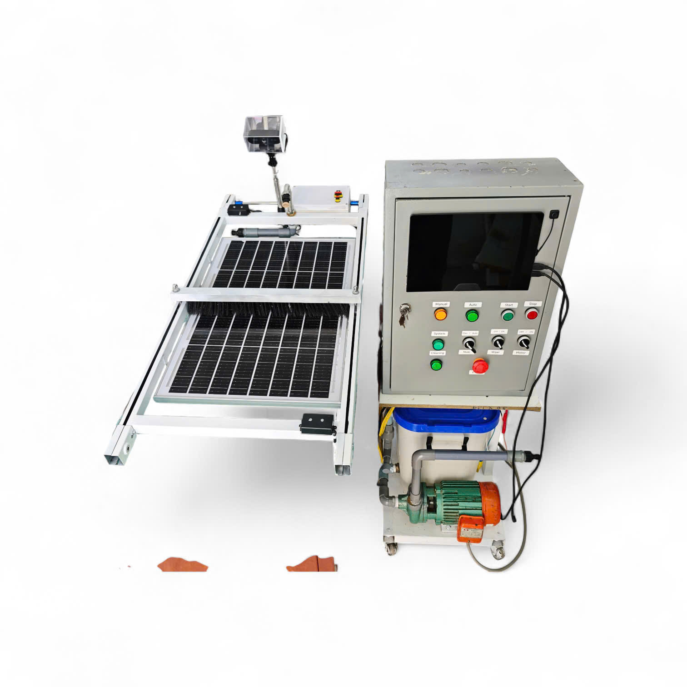
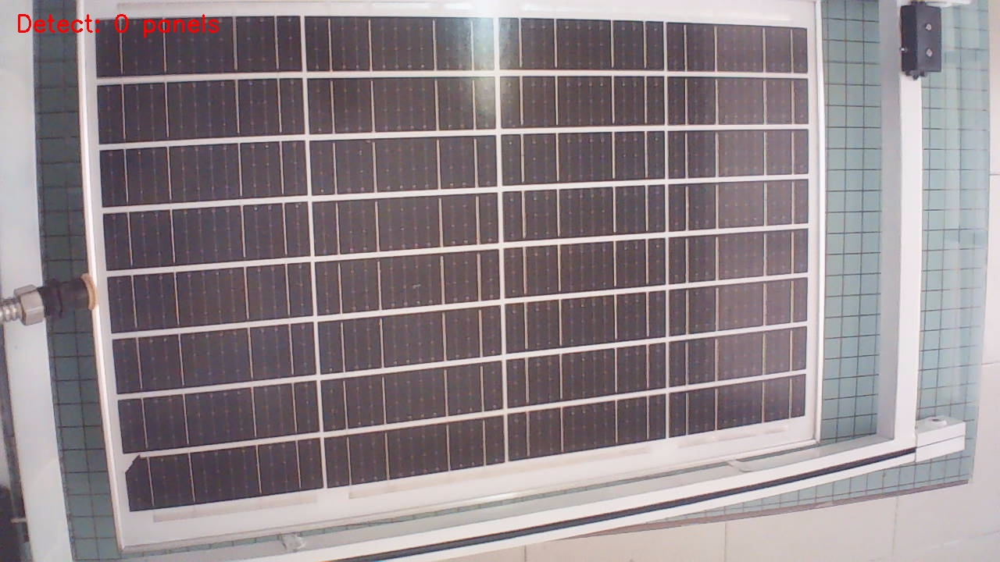
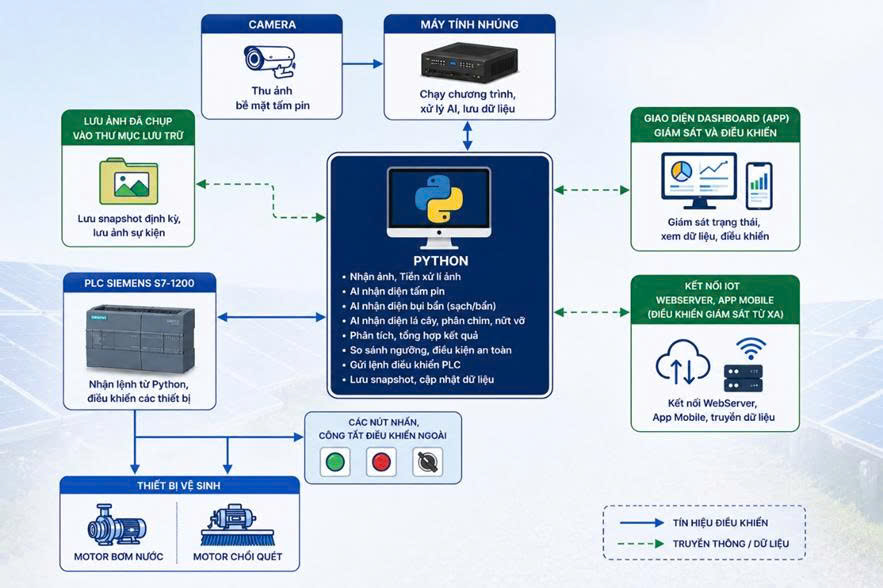
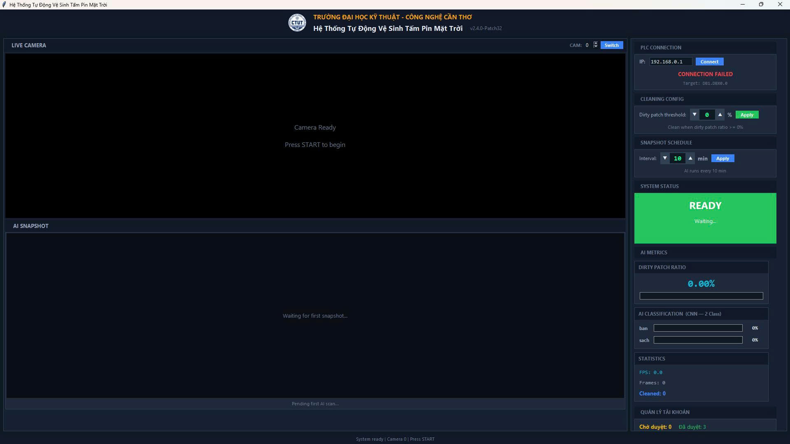
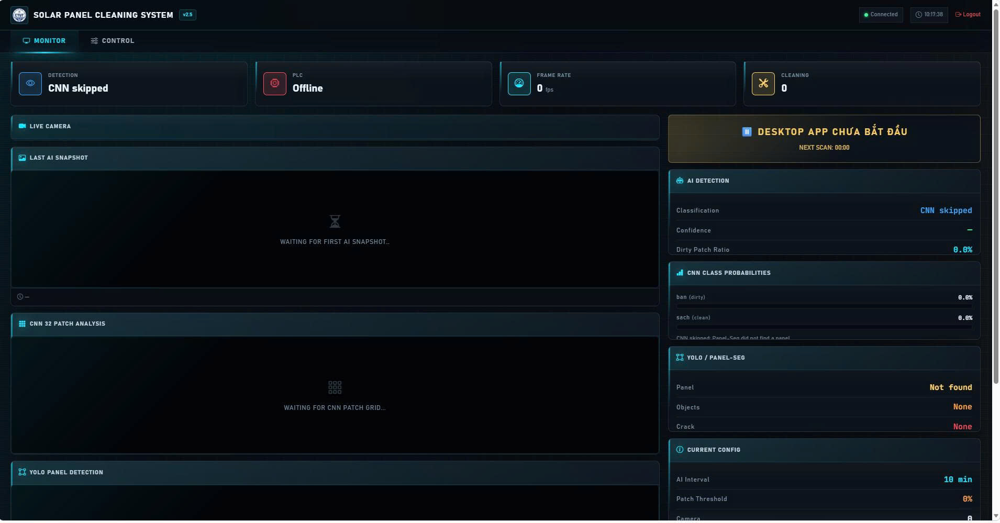
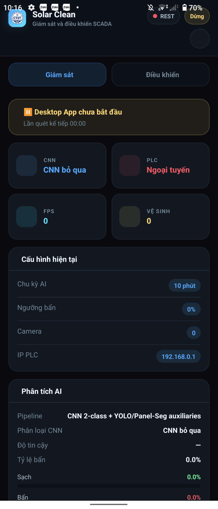

AI Vision · PLC Control · Web & Mobile Monitor
Hệ thống giám sát và tự động làm sạch tấm quang điện ứng dụng trí tuệ nhân tạo điều khiển bằng PLC
Ứng dụng camera, YOLO, EfficientNet-B0 và PLC Siemens S7 để phát hiện bụi bẩn, vật cản và tự động kích hoạt cơ cấu vệ sinh.
Tổng quan
Không chỉ nhận diện bằng AI,
Không chỉ nhận diện bằng AI,
hệ thống còn tự động vận hành và điều khiển vệ sinh.
Desktop app đóng vai trò trung tâm xử lý: đọc camera, chạy AI, phân tích tình trạng bề mặt tấm pin, quyết định khi nào cần vệ sinh và gửi tín hiệu đến PLC Siemens S7.
Web monitor và mobile app giúp người vận hành theo dõi trạng thái realtime, xem snapshot, cấu hình ngưỡng bụi bẩn và điều khiển hệ thống từ xa.
Hệ thống được xây dựng từ 4 khối chính:
Vấn đề thực tế
Bụi bẩn và vật cản làm giảm hiệu suất nhưng khó kiểm tra liên tục.
Tấm pin hoạt động ngoài trời thường gặp bụi, lá cây, phân chim, nước đọng hoặc bóng che. Nếu chỉ vệ sinh thủ công, người vận hành khó biết chính xác thời điểm nào cần can thiệp.

Giải pháp
Camera quan sát, AI phân tích, PLC điều khiển, giao diện giám sát từ xa.
Hệ thống tự động ghi nhận hình ảnh, phát hiện vùng tấm pin bằng YOLOv8-Seg, phân loại 32 vùng nhỏ bằng EfficientNet-B0 và gửi bit điều khiển đến PLC khi cần vệ sinh.
Camera
AI
Quyết định
PLC
Vệ sinh
Tính năng nổi bật
Đủ các khối cần thiết cho một hệ thống vận hành thật.
Nhận diện bụi bẩn
Phân loại từng patch thành `sach` hoặc `ban`, tính tỷ lệ bẩn trên bề mặt tấm pin.
Phát hiện vùng tấm pin
YOLOv8-Seg giúp crop đúng vùng cần phân tích và bỏ qua trường hợp không có tấm pin.
Phát hiện vật cản
YOLO Detect nhận diện lá cây, phân chim và các đối tượng ảnh hưởng đến bề mặt pin.
Điều khiển PLC
Gửi tín hiệu đến PLC Siemens S7 qua Snap7 để kích hoạt cơ cấu vệ sinh tự động.
Giám sát realtime
WebSocket cập nhật trạng thái AI, PLC, FPS, snapshot và số lần vệ sinh.
Cấu hình linh hoạt
Điều chỉnh camera, PLC IP, chu kỳ snapshot, ngưỡng bẩn và thao tác vệ sinh thủ công.
Quy trình hoạt động
Từ một khung hình camera đến lệnh vệ sinh PLC.

Camera ghi nhận hình ảnh
Frame được chuẩn hóa hướng ảnh và lưu snapshot theo chu kỳ.
YOLO-Seg tìm tấm pin
Hệ thống xác định vùng tấm pin, crop và tự xoay về portrait nếu cần.
CNN chia 32 patch
EfficientNet-B0 phân loại từng vùng nhỏ để tính tỷ lệ bẩn.
YOLO Detect vật cản
Phát hiện lá cây, phân chim và các đối tượng cần xử lý nhanh.
Ra quyết định vệ sinh
So sánh ngưỡng, lọc nhiễu và kiểm tra cooldown trước khi kích PLC.
Cập nhật giao diện
Desktop, web và mobile nhận trạng thái mới để người vận hành theo dõi.
Giao diện hệ thống
Một lõi điều khiển, nhiều màn hình giám sát.

Desktop app
Ứng dụng Tkinter là trung tâm vận hành: tải model, đọc camera, chạy AI, kết nối PLC, quản lý tài khoản, cài ngưỡng và lưu snapshot.
- Start/stop giám sát
- Manual clean và reconnect PLC
- Hiển thị kết quả AI theo từng lần snapshot

Web monitor
Dashboard FastAPI hiển thị trạng thái hệ thống trên trình duyệt, hỗ trợ API REST, WebSocket và các thao tác điều khiển từ xa.
- Xem frame hiện tại và snapshot
- Cấu hình camera, PLC IP, ngưỡng bẩn
- Quản lý tài khoản đăng ký

Mobile app
App React Native / Expo giúp theo dõi trạng thái realtime, xem ảnh, điều khiển start/stop và gửi lệnh vệ sinh thủ công ngay trên điện thoại.
- WebSocket kèm polling dự phòng
- Hiển thị KPI CNN, PLC, FPS và số lần vệ sinh
- Điều chỉnh chu kỳ snapshot và ngưỡng bẩn
Lợi ích
Vệ sinh theo tình trạng thực tế, giám sát được bằng dữ liệu.
Hệ thống giúp người vận hành chủ động hơn: biết lúc nào cần vệ sinh, có hình ảnh để đối chiếu và giảm thao tác kiểm tra lặp lại.
Giảm kiểm tra thủ công
Hạn chế bỏ sót vùng bẩn
Lưu bằng chứng snapshot
Giám sát qua web/mobile
Chủ động bảo trì
Dễ mở rộng nhiều cụm pin
Ứng dụng thực tế
Phù hợp cho mô hình nghiên cứu, đào tạo và triển khai thử nghiệm.
Công nghệ sử dụng
Kiến trúc phần mềm và điều khiển đã có đủ các tầng chính.
AI & xử lý ảnh
EfficientNet-B0, YOLOv8-Seg, YOLO Detect, TensorFlow/Keras, Ultralytics, OpenCV.
Điều khiển
PLC Siemens S7, Snap7, DB bit, trigger theo bụi bẩn, lá cây và phân chim.
Phần mềm
Python, Tkinter, FastAPI, REST API, WebSocket, React Native / Expo.
Triển khai
PyInstaller cho desktop, APK Android cho mobile, snapshot và log runtime.
AI chínhEfficientNet-B0
Phát hiện tấm pinYOLOv8-Seg
Số vùng phân tích32 patch
Kích thước patch224 x 224
PLCSiemens S7
BackendFastAPI
Lộ trình phát triển
Các bước để biến bản demo kỹ thuật thành sản phẩm hoàn chỉnh hơn.
- Thu thêm dữ liệu thực tế để đánh giá precision, recall và F1-score.
- Lưu lịch sử sự kiện vào SQLite/JSON có cấu trúc.
- Bổ sung cảnh báo nứt/vỡ và thông báo mobile.
- Tối ưu giao diện dashboard cho báo cáo vận hành.
- Mở rộng nhiều camera và nhiều cụm tấm pin.
Sẵn sàng xem demo?
Giới thiệu hệ thống giám sát và tự động làm sạch tấm quang điện cho đồ án, nghiên cứu hoặc triển khai thử nghiệm.
Có thể trình bày sản phẩm bằng hình ảnh thực tế, mô phỏng luồng AI và demo điều khiển PLC trực tiếp.
Email liên hệ: smartsolarcleaning.ctut@gmail.com